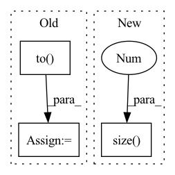

Pattern ID :2349
Before Change
// Self-attention
causality_mask = np.tril(np.ones((1, 1, seq_len, seq_len), dtype=np.int))
attn_mask = torch.from_numpy(causality_mask).to( self.device)
// attn_mask = valid_his.view(batch_size, 1, 1, seq_len)
for block in self.transformer_block:
seq = block(seq, attn_mask)
seq = seq * valid_mask[:, :, None].float()After Change
])
def forward(self, seq, lengths):
batch_size, seq_len = seq.size(0 ) , seq.size(1)
len_range = torch.from_numpy(np.arange(seq_len)).to(self.device)
valid_mask = len_range[None, :] < lengths[:, None]
In pattern: SUPERPATTERN
Frequency: 4
Non-data size: 3
Instances Fragment ID: 14437983
Project Name: thuwangcy/rechorus
Commit Name: 03e00482d35ef5c38ecdfba21aa5cd1802873944
Time: 2020-12-12
Author: THUwangcy@gmail.com
File Name: src/models/sequential/ContrastRec.py
M Class Name: SASRecEncoder
N Class Name: BERT4RecEncoder
M Method Name: forward(3)
N Method Name: forward(3)
M Parent Class: nn.Module
N Parent Class: nn.Module
M File Name: src/models/sequential/ContrastRec.py
N File Name: src/models/sequential/ContrastRec.py
M Start Line: 267
M End Line: 284
N Start Line: 270
N End Line: 285
Before Change
def forward(self, row_index, ind, x, y = None):
x = x.float()
hs = [torch.randn(x.size(0), self.args["hidden_size"]).to( self.device) for _ in range(self.args["num_units"])]
cs = None
if self.args["rnn_cell"] == "LSTM":
cs = [torch.randn(x.size(0), self.args["hidden_size"]).to(self.device) for _ in range(self.args["num_units"])]
xs = torch.split(x, 1, 1)
//print(xs[0].size())
//xs = [torch.squeeze(k) for k in xs]
for x in xs:
hs, cs = self.rim_model(row_index, ind, x, hs, cs)
h = torch.cat(hs, dim = 1)
preds = self.Linear(h)
if y is not None:
y = y.long()After Change
//xs = [torch.squeeze(k) for k in xs]
for x in xs:
hs, cs = self.rim_model(row_index, ind, x, hs, cs)
preds = self.Linear(hs.contiguous().view(x.size(0 ) , -1))
if y is not None:
y = y.long()
probs = nn.Softmax(dim = -1)(preds) Fragment ID: 14437988
Project Name: dido1998/recurrent-independent-mechanisms
Commit Name: d87a800096eaa36730cbabac535eea24973f3799
Time: 2020-02-11
Author: adidolkar123@gmail.com
File Name: networks.py
M Class Name: MnistModel
N Class Name: MnistModel
M Method Name: forward(5)
N Method Name: forward(5)
M Parent Class: nn.Module
N Parent Class: nn.Module
M File Name: networks.py
N File Name: networks.py
M Start Line: 151
M End Line: 161
N Start Line: 188
N End Line: 198
Before Change
input0 = features[2]
h0 = torch.zeros(self.num_layers, input0.size(0),
self.hidden_size).to(device)
c0 = torch.zeros(self.num_layers, input0.size(0),
self.hidden_size).to( device)
out, _ = self.lstm(input0, (h0, c0))
out = self.attention_net(out)
out = self.fc(out[:, -1, :])
return outAfter Change
def forward(self, features, device):
inp = features[0]
self.sequence_length = inp.size(1 )
out, _ = self.lstm(inp)
out = self.attention_net(out, device)
out = self.fc1(out)
out = self.fc2(out) Fragment ID: 14437990
Project Name: logintelligence/logadempirical
Commit Name: a67d9fc74c175ac3aa700fe533e22a6fe62290ab
Time: 2021-06-23
Author: c3363046@uon.edu.au
File Name: logbert/logdeep/models/lstm.py
M Class Name: robustlog
N Class Name: robustlog
M Method Name: forward(3)
N Method Name: forward(3)
M Parent Class: nn.Module
N Parent Class: nn.Module
M File Name: logbert/logdeep/models/lstm.py
N File Name: logbert/logdeep/models/lstm.py
M Start Line: 62
M End Line: 70
N Start Line: 73
N End Line: 79
Before Change
// Self-attention
causality_mask = np.tril(np.ones((1, 1, seq_len, seq_len), dtype=np.int))
attn_mask = torch.from_numpy(causality_mask).to( self.device)
// attn_mask = valid_his.view(batch_size, 1, 1, seq_len)
for block in self.transformer_block:
seq = block(seq, attn_mask)
seq = seq * valid_mask[:, :, None].float()
his_vector = (seq * (position == 1).float()[:, :, None]).sum(1)
return his_vector
After Change
])
def forward(self, seq, lengths):
batch_size, seq_len = seq.size(0 ) , seq.size(1)
len_range = torch.from_numpy(np.arange(seq_len)).to(self.device)
valid_mask = len_range[None, :] < lengths[:, None]
Fragment ID: 14437986
Project Name: thuwangcy/rechorus
Commit Name: 7b8b88b828f814cb8da18e1305837d1bce99306c
Time: 2021-04-14
Author: THUwangcy@gmail.com
File Name: src/models/developing/ContraRecBeta.py
M Class Name: SASRecEncoder
N Class Name: BERT4RecEncoder
M Method Name: forward(3)
N Method Name: forward(3)
M Parent Class: nn.Module
N Parent Class: nn.Module
M File Name: src/models/developing/ContraRecBeta.py
N File Name: src/models/developing/ContraRecBeta.py
M Start Line: 280
M End Line: 297
N Start Line: 135
N End Line: 150